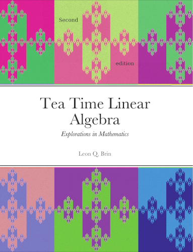

Table of Contents Ancillaries Printed Copy Changelog / revised PDF More Info

Also by L.Q. Brin: Tea Time Numerical Analysis
Greetings! And thanks for visiting.
This creation is an all-purpose open source textbook for linear algebra classes of all ilks. Inside you will find a complete and engaging introduction to linear algebra, making it a perfect primary resource for classroom study.
[The] writing is excellent ... sharp, to the point, and witty.
- Dick Pelosi
Take a ride through the landscape of linear algebra from basic mechanics through inner product spaces.
- 386 pages
- Over 1000 exercises with over 200 detailed solutions and hundreds more answers
- Over 250 illustrations
- Nearly 150 live SageMathCell links
- Open source
- Now with online homework and course management at MyOpenMath!
Presented in a conversational style with plenty of motivation, illustrations, applications, and theory, this text should be a comfortable read for most beginning mathematicians. Readers and instructors alike will appreciate the numerous detailed exercise solutions accompanying each section.
Examine the distribution of bicycles in the Capital Bikeshare system, model an un-preheated oven baking brownies, reproduce sounds via Fourier series, explore rep-tiles like the one decorating this cover, and more. Read proofs of the rank and nullity theorem, the determinant expansion formula, existence and uniqueness of solutions of linear systems and others.
It's all here in Tea Time Linear Algebra.